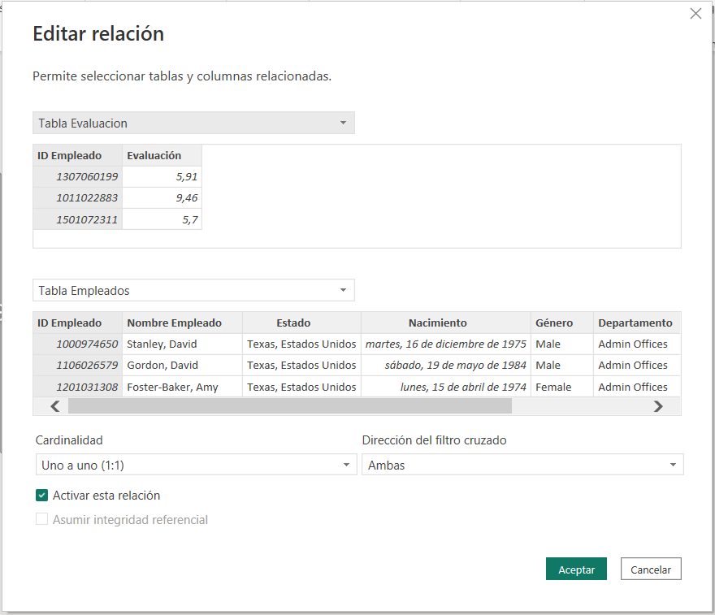

FASE 3: DATA MODELING¶
En la fase de Data Modeling, se definen las relaciones entre tablas, la cardinalidad en las relaciones, la visibilidad de campos, tablas y columnas calculadas que serán necesarias para completara la información requerida en los KPIs, para la representación de los indicadores.
Al importar los datos en Power BI Desktop, es muy importante contar con un modelo capaz de responder a las preguntas del negocio y es por lo que las relaciones entre las tablas deben estar bien definidas, ya que ellas ayudan a mostrar resultados claros en los informes.
Los modelos más utilizados son en Estrella y Snowflake, formadas por dos tipos de tablas:
-
Dimensiones: Almacenan información relacionada con el "Que", "Cuando", "Como",.. dentro de la base de datos.
-
Hechos (o Facts): Almacena información relacionada con los datos de las dimensiones, pero con elo fin de representar el "Cuanto" en las transacciones de las tablas relacionadas.
Modelos Relacionales¶
1. El modelo en estrella¶
Consisten en la relación de las tablas de hechos y dimensiones, de forma que la tabla de hechos queda centrada y las dimensiones, se relacionan con la tabla de hechos con un único nivel.
La tabla de hechos tiene un identificador almacenado para relacionar cada una de las tablas de dimensiones, implicadas en la relación. Cada una de las tablas de dimensiones, tienen un çunico identificador, coincidente con el almacenado en la tabla de hechos.
2. El modelo Snowflake¶
Es una amplicación del modelo en estrella ya que sigue manteniendo las mismas relaciones, pero se amplia la profundidas de las relaciones, ya que una misma dimensión, puede contener otros identificadores además del que relaciona la tabla de hechos.De forma que se pueda relacionar la tabla de dimensiones con otra u otras tablas de dimensiones, con el fin de aumentar el nivel de detalle de la información almacenada de forma más atomizada.
Tipos de relaciones entre tablas¶
La cardinalidad es el número de entidades con la cual otra entidad se puede asociar mediante una relación binaria.
Power BI Desktop facilita la creación de relaciones realizando una detección automática durante la carga, sin embargo, puede que sea posible que estas deban ser modificadas o crear nuevas relaciones no identificadas, por tanto es importante saber crearlas o editarlas.
Para poder editar una relación, nos situamos sobre la línea que une las tablas y con el botón derecho nos aparecen las propiedades.


Con la opción de Administrar Relaciones, nos aparecen las relaciones que tenemos hasta ese momento.
Las relaciones y su cardinalidad¶
Dentro de la vista de modelo, podemos observar que cada tabla contienen varios elementos que ayudan a gestionar las tablas de forma ágil.
El ojo hace referencia a ocultar/mostrar tablas.
Mientras que los tres puntos permiten realizar una serie de acciones:
Lenguaje DAX¶
DAX es un lenguaje de fórmulas usado en Power BI que significa Data Analysis Expressions o Expresiones de Análisis de Datos. Las funciones que nos proporciona tienen funcionalidades idénticas y los mismos nombres que las funciones de Excel.
Se utiliza para crear columnas calculadas, medidas y tablas personalizadas.
Existen diferentes tipos de funciones en el lenguaje DAX, que se agrupan de forma que cada uno de estos grupos, tienen unas finalidades específicas en el desarrollo de medidas y columnas calculadas.
Operadores DAX¶
El lenguaje DAX (Expresiones de análisis de datos) usa operadores para crear expresiones que comparan valores, realizan cálculos aritméticos o trabajan con cadenas. Existen cuatro tipos distintos de operadores de cálculo:
-
Operadores aritméticos: Para realizar operaciones matemáticas básicas (como sumas, restas o multiplicaciones), para combinar números y para producir resultados numéricos.
-
Operadores de comparación: Permite comparar dos valores con los siguientes operadores. Cuando se comparan dos valores con estos operadores, el resultado es un valor lógico, ya sea TRUE o FALSE.
-
Operadores de concatenación de texto: Use el signo "et" ( & ) para unir, o concatenar, dos o más cadenas de texto a fin de generar un único fragmento de texto.
-
Operadores lógicos: Usa los operadores lógicos (&&) y (||) para combinar expresiones para generar un solo resultado.
Columnas¶
Crear columna personalizada¶
Hay tres maneras de crear una columna personalizada:
-
Directamente en el origen de datos, por ejemplo agregando el campo calculado a una vista en una base de datos relacional.
-
Crear la columna personalizada en Power Query.
-
Crear la columna calculada mediante DAX.
Crear columna calculada mediante DAX¶
Nos situamos en los puntos situados junto a la tabla y nos aparece el siguiente menú:
También desde Herramientas de Tablas:
Medidas¶
Las medidas se construyen de forma similar a las columnas calculadas, pero no se puede visualizar desde la vista de datos, por lo que se deberá representar el resultado en un objeto visual con el fin de validar el resultado de la función.
Es un cálculo que también se realiza con una expresión DAX pero no es necesario que este cálulo sea hecho en cada línea.
Las medidas tienen que estar creadas dentro de una tabla, pero luego podemos moverlas a otras tablas.
Se recomienda crear una tabla donde se agruparán todas las medidas calculadas del modelo.
Medidas Rápidas¶
Las Medidas Rápidas, facilitan la creación de funciones, ya que se basan simplemente en definir cual es la medida que se quiere realizar, y cumplimentar los datos de las tablas de las que se dispone. Con esto, Power BI creará la formula de una manera rápida y sencilla.
Se puede solicitar la publicación de nuevas medidas rápidas al equipo de soporte de Windows, desde la propia ventana de medidas rápidas. La comunidad técnica de la herramienta es muy activa y escucha a los usuarios, para mejorar la herramienta.
Diferencias entre Columnas Calculadas y Medidas¶
Las Columnas Calculadas, se calculan en el momento de definir el cálculo. Esto significa que si se hace uso de forma muy recurrente de este recurso, en tablas con un número elevado de filas, estará ocupando un espacio muy valioso en la memoria del equipo.
Las Columnas calculadas, se actualizan al realizar el cálculo, al abrir el proyecto que contiene dichas funciones, o cuando se hace clic sobre el botón de actualizar de Power BI.
Las medidas tienen un uso más optimizado, aunque un abuso del uso de este recurso, también puede penalizar el rendimiento de la memoria y por tanto generar retrasos en la presentación del dato.
Las medidas solo se cargan cuando la página del cuadro de mando, contiene este elemento en algún objeto visual. Lo que significa, que mientras no se muestre en pantalla un objeto visual con una medida, no afectará al rendimiento.
Evidentemente, como en el caso de las Columnas Calculadas, un uso muy abusivo de este recurso, puede suponer que las vistas de los cuadros de mando contengan muchas medidas y por tanto se retrase su presentación por requerir un alto rendimiento de la máquina que soporta estos paneles.
Como conclusión, se deberá buscar el equilibrio según criterios lógicos, para no usar el recurso de Columnas Calculadas, en el cálculo de datos que no se necesitan tener durante toda la presentación del dato, ni recargar los cuadros de mando con Medidas, que sacrificarán los tiempos de carga de los Dashboards. Por eso, se debe tener un criterio muy fino, a la hora de decidir por que recurso decantarse, partiendo de los objetivos de uso de cada uno.
Crear un repositorio de Medidas¶
- Crear contenedor desde la función "Especificar Datos".
- Asignar nombre del repositorio.

- Asignar las medidas al nuevo contenedor.
- Eliminar la columna que se ha creado por defecto.
La función CALCULATE¶
CALCULATE es con diferencia la función más potente de DAX y se encarga de evaluar una expresión en un contexto que está modificado por los filtros especificados en la función. Con CALCULATE comenzarán la mayoría de las fórmulas que diseñemos en los informes.
Con la función podemos:
- Añadir nuevos filtros o modificar al contexto existente.
- Ignorar una parte o todo el contexto de evaluación.
En la sintaxis de CALCULATE la única parte obligatoria es la expresión, por lo que se puede expresar una función CALCULATE sin ningún filtro y funcionará sin problemas.
Los pasos se realizan de la siguiente forma:

El resultado de la función anterior será:

Buenas prácticas durante el modelado de datos¶
-
Modelar correctamente los datos antes de comenzar a desarrollar cualquier informe. Se recomienda trabajar con modelos en estrella que reducen el tamaño de almacenamiento y optimizan los tiempos de consulta.
-
Se recomienda que el dato venga procesado desde el origen en la medida que sea posible ya que las operaciones de transformación en Power Query pueden repercutir en el rendimiento del informe.
-
Si el modelo de datos cuenta con una variable tipo DATETIME, se recomienda separar las fechas de las horas en Power Query ya que mejora la calidad de comprensión.
-
Eliminar tanto filas como columnas que no se vayan a utilizar.
-
Evitar convertir valores BLANK a valor, por lo tanto es mejor controlar los nulos y los valores en blanco con lenguaje DAX.
-
Crear una tabla de medidas en Power BI Desktop donde ir creando diferentes medidas del modelo con DAX.
-
En Power BI Desktop, ocultar los campos de relación de tablas (campo id) en las tablas del modelo. Esto facilita el trabajo a los usuarios de negocio que vayan a trabajar en un futuro con un informe.
-
Incluir comentarios a las medidas para comprender fácilmente los objetivos de las funciones.
-
No sobrecargar una página de elementos visuales y no sobrecargar un informe con muchas páginas.
-
Evitar el uso de elementos visuales no certificados, para no tener problemas en el desarrollo.
-
El elemento visual matriz, suele tener un tiempo de cómputo mayor que otros.